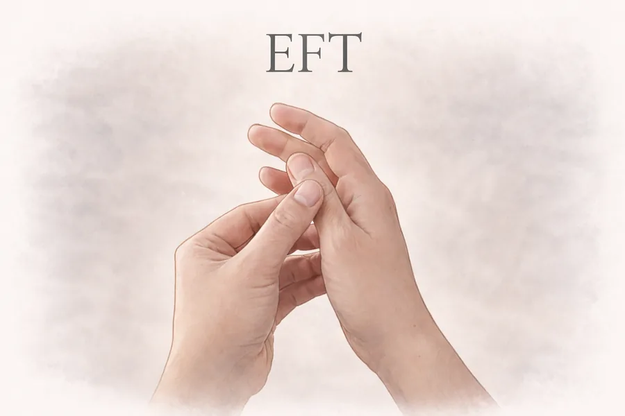

What is EFT & Why Should I Give it a Go?

Emotional Freedom Technique, more commonly known as tapping, was introduced by Gary Craig in 1995, an engineer with a passion for wellbeing. EFT is a mind-body technique and can be really helpful when working with painful memories, physical pain and emotional discomfort.
Now stay with me, I know it sounds a bit woo-woo, but research studies have shown that the combination of physically tapping or touching acupressure points in the body while focusing on a problem sensation or emotion can help to either process the memory and/or reduce the discomfort of the emotion or sensation. In fact, the National Institute for Clinical Excellence (NICE) has recommended that further research be conducted on EFT in the treatment of PTSD in adults.
Maybe you think it's too alternative for you?
Maybe you've seen a few tapping videos on social media, given one a go and found it didn't work the way you wanted it to so why try again?
On the flip side, what have you got to lose? You don't have to believe in EFT for it to work, although you will get more out of it if you're able to engage.
Why working with a trained practitioner is different
If you've tried EFT on your own but been disappointed with the outcome, working with a trained practitioner, like me, can be a totally different experience. Not because what you did was wrong but because we all have blind spots that stop us from seeing the full picture.
When working with a client, I combine both my counselling and EFT insight to help clients identify important titbits of information that they may have not been able to see on their own.
The mind and body are always in communication with us but sometimes it can seem like a language we don't understand. That's where I can help and who knows, you might unlock something really transformative within yourself.
Reference: NICE guidelines on PTSD
Ready to take the next step?
Book a free consultation